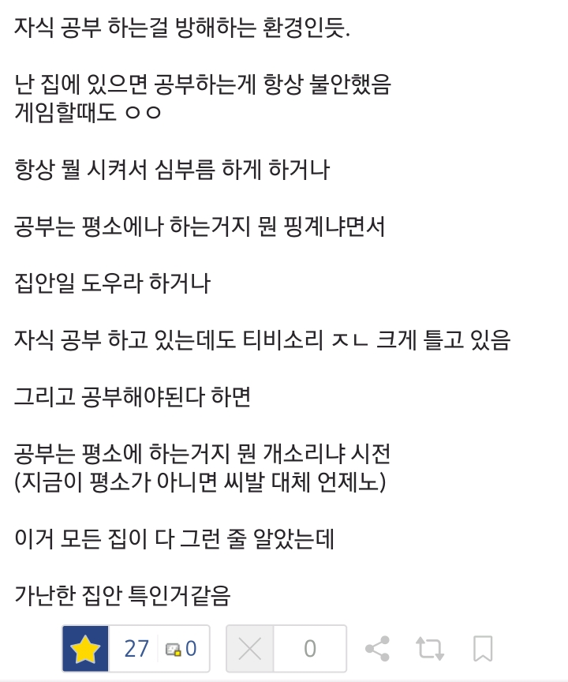
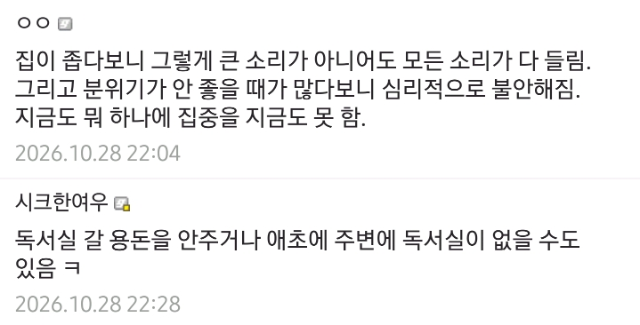

잘사는집은 학원보냇징
흙수저라고 환경 탓은 하면 안되지
집이 작다해도 자식 공부한다면 조용히 해주는 집도 있어
물론 공부의 편의를 위해 학원이나 필요한것들의 보조가
없을 뿐이지
그냥 부모 마인드 문제임
부모 마인드 문제가 맞긴한데
그 마인드가 흙수저일 경우 발동 확률이 80퍼 넘어갈거 같으니까 문제지ㅋㅋㅋ
흙수저부모는 마인드 개판일 확률이 ㅈㄴ 높음 ㅋ
뭐, 엄밀히 조사해본 건 아니겠지만
저기서 깔고 가는 건
흙수저의 일반적 특징이란 게
집이 작을 뿐더러 공부도 방해하는 집이라는 거라서
니가 말한 경우는 예외라고 봐야지
일반적인 놈들이 환경탓 하면 안 되는 게 아니라
예외적인 놈들이 축복에 감사해야지
공부 못하게 집안일 시키기 vs 성적 안좋다고 죽기전까지 패기
공부가하고싶으면 도서관을갔다
그러면 집에일찍와서 도와줄 생각 안하고 밖에 싸돌아다니면서 논다고함 ㅇㅇ
원룸에서 태어나서 시끄럽다고 줘터지고 스마트폰 쥐어주기 vs 자기방 독서실 만들어주고 부모님부터 공부중 고등학생때 결과는?
근데 저 정도면 부모랑 기싸움할 게 아니라
도서관 가는 게 맞다고 본다
밥 먹을 용돈 정도만 받거나
그것도 안될 정도면 도시락 챙겨서 가야지
읍면리 단위면 도서관 가기 위해서 20분 마다 한대 있는 버스를 타고 1시간을 가야 도서관이 있음.
애초에 도서관 접근이 쉬우면 흙수저가 아닐 확률이 높음.
진짜 그런 답도 없는 경우면
이해가 될 수는 있지
흙수저 동네는 도서관이 비행청소년 아지트임 ㅋㅋ
흙수저인데 용돈이 어딨어... 버스비라도 주면 다행이지. 급식비도 밀리는데. 도시락? 다른 식구들 밥을 내가 해 줘야 하는데 도시락 싸들고 어딜 가냐.
평일이야 학교 시설 이용하면 되겠고
주말에 도서관을 간다는 가정한건데
평일에도 도서관 간다고 가정해도
한달 20만원 정도를 최대로 잡아도 됨
도시락은 10만원대
수준으로 떨어질건데
밥하는 것도 안도우면 야랄할 정도의 집안이면 냉정하게 말하면 학교 관두고 걍 검정고시 보고 알바하면서 집안 탈주를 해야함
애초에 그정도로 극단적인 가정이면 집에서 공부 븥잡겠다는 거부터도 억지임 ㅋㅋ
자감돌이야...
너를 공격할 의도는 전혀 없으나,
환경이 사람을 만드는 거다.
그러므로 해당 환경을 잘 모르면 함부로 말하면 안된다.
마지막 문장이 정말 마음을 아프게 한다
“애초에 그정도로 극단적인 가정이면 집에서 공부 붙잡겠다는 거부터도 억지임 ㅋ”
진짜 억지는 너가 부리는 중 아니니..?
개붕이들이 억지부리면서
조건식 계속 붙이니까 그러지 ㅋㅋ
본문의 글에서 나온 조건만으로 따져보는 게 맞는데 쟤는 게임도 하는 애인데
집에서 겜 할 수 있는
컴퓨터나 휴대폰이 있고
그럴 시간적 여유도 있는 애라는 건데
그렇게 따지면 진짜 최악의 흙수저였으면 폰은 연락용이라 게임은 못돌리고 컴퓨터는 생각도 못함 ㅋㅋㅋ
흙수저라도 집에서 게임할 여유는 있지만 다른 모든 일들은 어렵나 보군요
진짜 흙수저애들은 알바하고 있던데... 돈을 벌어와야되더라고 생존의 문제임
본문에는 없지만, 흙수저 대입 수험생들은 은수저 이상 가정이라면 가질 일이 없는 스트레스를 가지고 있음.
집에 가면 가족이 싸우고 있다던지,
낮에 집에 가면 교대근무한 아버지가 자고 있어서 조용히 있어야 한다던지,
가족중에 누군가 아픈데, 돈이 없어서 쩔쩔매고 있다던지,
아버지나 어머니가 갑자기 실직을 한다던지.
자수성가는 허상이다
부모님 초졸x 초퇴인데
어릴때 10살? 까지 공부시키려고 노력하셨음
해보시질않으셔서 방법이나 트렌드에는 조금 약하셨음
그래서 내가 기계공학과 진학한다했을때도 말리심..
손에 기름칠하는거싫으시다고 ㅋㅋ..
17살까지 단칸방 5인가족 살면서 학교는 편도1시간 허비하며 다니다가 18살에 그나마 도심지로 이사갔음 ㅋㅋ
무튼 초등학생 고학년 때부터는 부모님이 심하게 쪼으시지도 않았지만
속으로 내가 안하면 집 좃된다는 생각으로 우물안에서 적당적당히 하다가 대학도 적당적당히..
(2000년대 중반 부경,울산,동아,영남+서울과기대(구산업대) 기계공학 합격)
직장도 적당적당한 대기업-공사-대기업 테크타는중
(삼,슼,현,엘 아님)
중고딩때 노력 크게 안했는데 노력했으면 어땠을까 함
우물안이 아니라 지원좀 받고 제대로된 환경에서 좀 악착같이 경쟁하면 어땠을까 싶음
진짜 대학생이 되어서야 공부방법 깨닫고 직장다니며 기사, 기능장도따고 기술사도땄고 박사도 하는중인데 여러모로 아쉬움..
특히 서울서 직장생활할수록 진짜 인프라 차이 크게 느끼고 나이가 들고나서 90년대 중반~후반 쉬리같은 영화 가끔 보는데 거기서 즐기는 문화생활이 지금봐도 촌스럽지가 않더라
흙수저는 진짜 힘들다 그 모든게 대학도 학장금대출로 다 때려박고 기숙사 가거나 반지하 가거나 이지선다 무조건이고 ㅋㅋ 지금추억이지만 그땐 힘들었으니..
멋집니다.. 기술사에 박사까지
경상도 출신같은데 고생했네 행님. 나도 비슷한 환경에서 영대 기계 들어가서 어찌저찌 대기업 들어감... 잘사는 집 부모같았으면 과외니 학원이니 이리저리 쪼았을 텐데, 오히려 그냥 놔주니까 내가 불안해서 공부하게 되더라. 근데 그래도 푸시를 해줬으면 더 좋은 데 갔지 않았을까... 하는 아쉬움은 있음. 원망은 1도 없지만
진짜 부모님이 주취자고 폭력성향이 없어서 다행이지 안그랬으면 노가다판 전전하지않았을까?
나보다 어렵게 자란 사람들이 보기엔 나도 온실이었겠지만 그냥 아쉬운거지 더 좋은 환경에서 자랐다면 더 좋았지않았을까 하는? 아마 우리같은 사람들 많지 싶어
유아기 때 이미 니들 좋아하는 노오력 능력치는 거의 완성됨
무엇으로? 부모와 주변의 애정어린 케어.
그렇다고 청소년기든 사회초년생이든 못 할 것도 없음.
다만 메타인지 확실해야함. 나는 불우하게 자라서 의지가 박약하다. 이거 쉽지 않거든. 그런 부모와 주변일수록 가스라이팅 오지게 박아놔서 나의 능력과 환경은 훌륭한데 내가 게을러서 못한 것이다. 라고.
나는 개좃밥이고 그래서 계속 도전하고 하기 싫은 일을 해서 그것을 극복하는 과정을 끊임없이 반복해야 남들한테 한번 비벼나 볼 수 있다. 이런 마음가짐 이어야 됨. 존나 힘들지.
무슨 도서관이니 핑계니 하는 온실 속 운좋은 화초 새끼들은 아구통 맞기 전에 입 닥치고 항상 효도해 그냥.
이런집안 특징이 "조용히 해준다"는 개념이 없음.
책임이 부여된 가장이라는 직책을 그냥 자기 꼴릴 때마다 아무거나 시켜 먹어도 되는 권리처럼 생각하는 새끼들이 존나 많은것도 덤.
생각해보니 중학교때부턴 티비 아무도 집에서 안봤네
저런 환경에 있는 애들은 도와주는 것도 쉽지 않음.
의욕은 있는데 컴퓨터가 박살나서 인강도 못보는 거 같길래 남는 컴퓨터 갖다 줬더니 얼마안가 그냥 게이밍 머신 됨. 이건 괜찮았음 원래 애들은 그런거니까. 그런데 이런저런 프로그램에 적극 추천해주고 챙겨주고 사설 장학생에 선정되게 꽤 꾸준히 도와줬는데 나중에는 지가 찾아와서 이거 해달라 저거 해달라 당연하게 여기기 시작함. 뭔가 잘못됐다고 느낌.
보니까 스스로 뭘 할 수 있는 능력이 거세된 느낌이랄까. 집에선 주취자가 뭘 집어던지고 있고 애 의견은 궁금해하지도 않고, 어쩌면 자기가 노력해서 얻은 것보다 불쌍해보여서 얻는게 더 많다는 잘못된 결론을 얻어서인지 우리가 바라던 모습에서 벗어난 결과를 맞이함.
집이 워낙 환경이 별로였어서 기숙사가 있는 학교로 진학하게끔 같이 플랜도 짜고 공부도 봐주고 해서 무사히 진학시킬 땐 좋았지. 도움 받는 자기의 수준이 자기 능력인 줄 알고 이상응 높아졌는데 졸업하고 이런 도움 연계가 끊어지니까 다방면에서 적응 못하고 자퇴해버림,,
뭐랄까... 살면서 당연히 누리고 체득해야할 가정에서의 그 무언가가 결핍되면 오은영이든 이재용이든 누가 오더라도 도와주기 어렵겠단 생각을 해봄. 모르는 자들이 이렇게 저렇게 노오력만 하면 된다고 말하는 건 쉽지. 노오력에도 노오력만 해도 될만한 환경적 뒷받침이 되야 할 수 있는 거임.
근데 부모 잘만나는것도 운이야 유전자도 운이고
핑계고 뭐고 통계가 증명한다
한국은행에서 자녀의 학벌은 부모의 경제력을 따라간다 했으니 그만큼 흙수저는 어렵단 거지
환경탓하지말라는 새기들은 공부 안해봤나
환경만 갖춰지면 공부를 안할래야안할 수가 없다
나도 공부하기 싫어서 개뺀질댔는데
부모님이 공부하라고 개인방 주고 작업용책상 공부용책상 따로 맞춰주고 뭐 배우고싶다하면 기본적으로 책은 무제한 구매 가능. 학원이나 학습지도 맘대로 다니고 부모님이 딱 봤을 때 기본기부족해보이는 부분은 알아서 판단해서 과외 끊어줌.
공부하고 있으면 제 시간에 밥주고 간식주고 자기전에 전기장판 뎁혀주고 아침에 깨워주고 급하면 학교학원 다 차로 데려다주고. 난 모든 부모님이 다 이래 해주는건줄 알았고 반에서 1등하는건 내노력인 줄 알았음
근데 반에서 최하위권이던 내 친구들
한명은 친구 부모님이 친구한테 난 널 포기했다 선언하고 고작중딩인데 문제집이든 학원이든 필요한건 니가 돈벌어서 사던가 부모인 본인한테 대출받던가 하라는 거 듣고 충격먹고
한명은 이혼가정인데 학원은 커녕 중학교도 제대로 못다니게 하면서 동생 2명 돌보고 집안일 하라고 고등학교도 못가게하던거 겨우 기숙사제로 도망 가는거 실시간으로 보고 또 충격먹고
봉사다니면서 시설 중고딩 남자애들 첨에 만났을 때는 왜저러고살지 공부해서 성공하면되는데 했는데
나는 걍 나사빠진채로 학원에서 시키는 공부만 할 시기에 이 애들은 밥먹을 돈이 없어서 오토바이끌고 알바하러 다니는거보고 충격먹었다
어릴때부터 머리좋은것도 부모님들이 이것저것 교육시켜가며 말랑하게 하는건데
그런 것도 없었던 애들이 당장 와닿지 않는 먼 미래보다 현실의 생존만 생각하게 되는건 어쩔수없는거임
환경탓하지말라고 함부로 얘기하지말아라
수저는 없지만 부모님이 술담배는 안하는 집안이라 다행이라 생각함